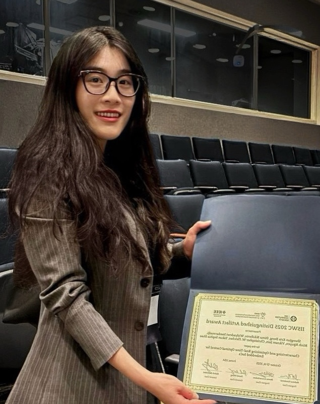
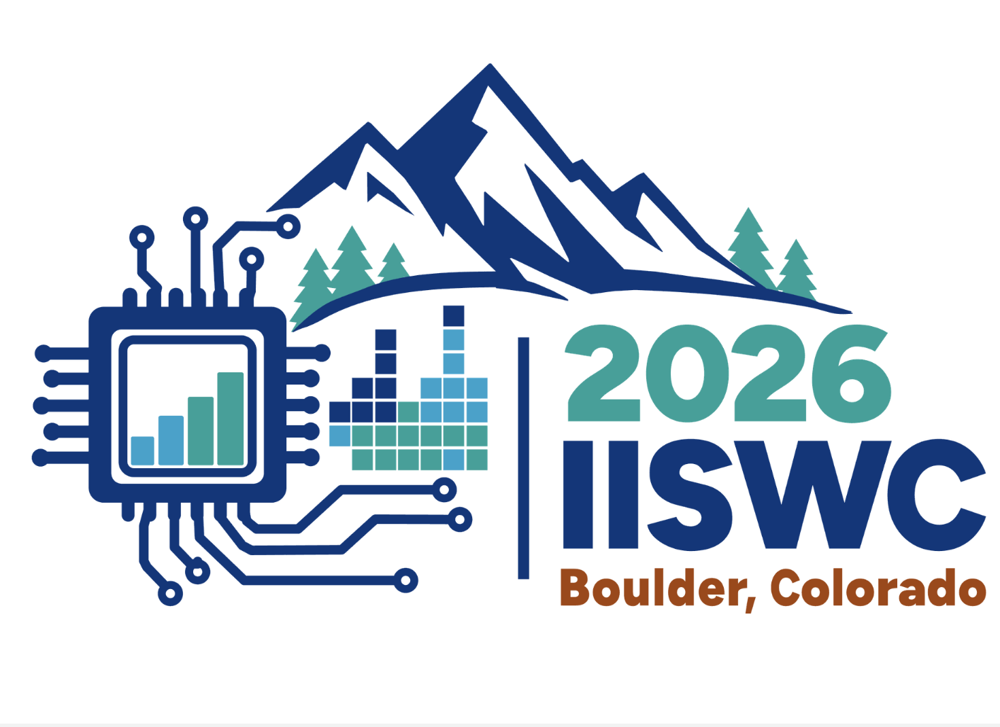
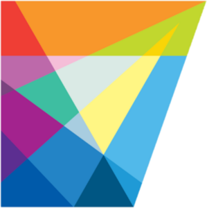

Ph.D. Candidate, UC Berkeley EECS
PhD Research Engineer @ NVIDIA
Email: krisdong [at] berkeley [dot] edu
[ CV]
[
CV]
[ Google Scholar]
[
Google Scholar]
[ LinkedIn]
[
LinkedIn]
[ GitHub]
GitHub]
Affiliations:
NVIDIA Research
Specialized Computing Ecosystems (SLICE)
Berkeley Architecture Research (BAR)
Berkeley Wireless Research Center (BWRC)
Security and Privacy Research at Illinois (SPRAI)
I'm a Ph.D. candidate in Computer Architecture at the University of California, Berkeley (EECS), co-advised by Prof. Sophia Yakun Shao and Prof. Christopher W. Fletcher.
My research focuses on systems for AI and AI for systems, with an emphasis on LLM-driven optimization for efficient, high-performance execution from the kernel level to the full system stack. I develop ICRL-based agentic flows for automating code generation and performance-power optimization, and integrate these methods into compilers and runtime systems for heterogeneous and edge architectures.
More broadly, I build infrastructure frameworks that support end-to-end hardware-software co-design, enabling rapid experimentation and cross-stack integration, while providing full-stack performance characterization and closed-loop performance optimization and validation. I am passionate about open-source ecosystems and reproducible research. My efforts have been recognized with the Distinguished Artifact Award at ISCA 2023 and the Distinguished Artifact Award at IISWC 2025.
I am on the job market for full-time positions in academia and industry starting in 2027. Please feel free to reach out at krisdong [at] berkeley [dot] edu!
EventSep 2026: We held a tutorial, Building, Tracing, and Optimizing End-to-End ML and Robotic Workloads on Heterogeneous RISC-V SoCs with a Lightweight Zephyr Runtime, at IEEE IISWC'26 on Sep. 27, 2026 in Boulder, Colorado!
PaperSep 2026: XPU-RT was released publicly at our IISWC'26 tutorial!
PaperFeb 2026: NVIDIA released its first open-source agentic framework for CUDA optimization: KernelBlaster. It was a privilege to lead this effort and execute the vision with my amazing team!
AwardOct 2025: We won the Distinguished Artifact Award at IISWC'25!
PaperOct 2025: Our work on Characterizing and Optimizing Real-Time Optimal Control for Embedded SoCs was presented at IEEE IISWC'25!
OthersAug 2025: My internship at the NVIDIA Architecture Research Group has been extended to Fall 2025!
OthersMay 2025: I'm excited to join the Architecture Research Group at NVIDIA as a PhD Research Intern!
PaperMay 2025: Our work on Certifiable Deep Learning for Reachability using a new Lipschitz Continuous Value Function was accepted by IEEE RA-L'25!
PaperAug 2024: Our work on LLM-Aided Compilation for Tensor Accelerators was accepted by IEEE LAD '24!
OthersAug 2024: I passed my Ph.D. preliminary exam at UC Berkeley!
EventOct 2023: We organized a half-day tutorial on RoSÉ at IEEE MICRO!
AwardAug 2023: I was granted an EECS Departmental Ph.D. Fellowship by UC Berkeley!
AwardJun 2023: We won the ISCA Distinguished Artifact Award! (BWRC News)
PaperJun 2023: Our work RoSÉ: A Hardware-Software Co-Simulation Infrastructure Enabling Pre-Silicon Full-Stack Robotics SoC Evaluation was presented at IEEE ISCA.
OthersMar 2023: I was featured on UC Berkeley EECS Medium!
EventMar 2022: Our work was presented at the RoboARCH Workshop at IEEE MICRO!
EventMar 2022: Our work was presented at the ILLIXR Consortium. (Recording)

Characterizing and Optimizing Real-Time Optimal Control for Embedded SoCs
IISWC '25: IEEE International Symposium on Workload Characterization
IISWC Distinguished Artifact Award

ISCA '23: 50th Annual International Symposium on Computer Architecture
ISCA Distinguished Artifact Award
Certifiable Deep Learning for Reachability using a new Lipschitz Continuous Value Function
IEEE Robotics and Automation Letters

LLM-Aided Compilation for Tensor Accelerators
LAD '24: IEEE International Conference on LLM-Aided Design
Cygnus: A Heterogeneous Octa-Core RISC-V Vector Processor for Digital Signal Processing Applications
IEEE Journal of Solid-State Circuits, Volume 61, 2026
Symposium on VLSI Technology and Circuits, 2026
Building, Tracing, and Optimizing End-to-End ML and Robotic Workloads on Heterogeneous RISC-V SoCs with a Lightweight Zephyr Runtime
Tutorial at IISWC '26: IEEE International Symposium on Workload Characterization, Sep. 27–29, 2026, Boulder, Colorado
[Code]

Oral Presentation, MICRO '23: IEEE/ACM International Symposium on Microarchitecture
A Co-Simulation Platform Enabling System-Level Pre-Silicon Evaluation of Robotics SoCs
Oral Presentation, ILLIXR Consortium, University of Illinois at Urbana-Champaign, 2022
Merlin: Agile Compiler Infrastructure for HW/SW Co-Design
OSCAR Workshop at ISCA '26: International Symposium on Computer Architecture

BAST: Adaptive Scheduling of Real-Time Robotic Workloads on Heterogeneous SoCs
Academic Poster Session, GHC '26: Grace Hopper Celebration 2026, Anaheim, California, Oct. 27–30, 2026
Design, Simulation, and Evaluation of Hardware for Full Stack Robotics Systems
2nd RoboARCH Workshop at MICRO '23: IEEE/ACM International Symposium on Microarchitecture
DryDock: A Co-Simulation Platform Enabling System-Level Pre-Silicon Evaluation of Robotics SoCs
1st RoboARCH Workshop at MICRO '22: IEEE/ACM International Symposium on Microarchitecture
PhD Research Engineer
At NVIDIA, I develop agentic LLM-based methods for generating and optimizing GPU code for NVIDIA cuOpt, a GPU-accelerated library for large-scale linear, quadratic, mixed-integer, and vehicle-routing optimization. I build automated workflows in which LLM agents iteratively generate, evaluate, and refine performance-critical GPU kernels, improving efficiency and scalability for problems with large numbers of variables and constraints.
Siri Machine Learning Engineer
At Apple, I developed a hardware-aware agentic AI framework for optimizing real-time multimodal VLM/VLA-style models, using an in-context reinforcement learning workflow that leverages runtime feedback to autonomously discover memory, scheduling, and compute optimizations.
PhD Research Intern
I worked as a PhD Research Intern in NVIDIA's Architecture Research Group. My internship project turned into NVIDIA's first open-source agentic framework for CUDA optimization, KernelBlaster. I had the pleasure of working with Christos Kozyrakis, Siva Hari, and Sana Damani!
System Engineer
At Tesla, I contributed to enabling vehicle remote control for long-distance tele-operation with confidential, unreleased features. Additionally, I optimized user flows for Tesla's human-machine interface by re-architecting the notification stack and enhancing the vehicle range analysis portal, improving efficiency and satisfaction for 3.6 million users.
Project Manager
At Amazon, I initiated the "Alexa for Fulfillment Center" project, enabling Alexa to assist warehouse associates in completing tasks with appropriate instructions. Collaborating with Amazon’s Alexa (Speech) team, I defined project requirements to guide development and deployment efforts and conducted prototype evaluation using real-world data in diverse noisy warehouse environments.
University of California, Berkeley
Ph.D. in Electrical Engineering and Computer Sciences
Master in Electrical Engineering and Computer Sciences
University of Massachusetts Amherst
B.S. in Computer Science, B.S. in Mathematics, B.B.A. in Finance
Graduate Student Instructor
I led a discussion section and graduate student reading group for CS 152/252A: Computer Architecture and Engineering at UC Berkeley, facilitating technical discussions on processor microarchitecture, instruction set design, and system-level performance analysis. [Class website]

Lecturer
I led a new lecture series “Introduction to Embedded Systems and Edge ML” at UC Berkeley’s summer program. Job duties included designing the curriculum, organizing the program and lab sections, and introducing high school students to machine learning, robotic prototyping, and embedded systems programming on edge devices. [Related post]
Resources that helped me in my research journey, along with blog posts I’ve written or been featured in:

Tech Lead
I led a team of nine students and four advisors for the 8th–9th Annual Women of Isenberg Conference, including virtual seminars and workshops, successfully raising $70,000 and maintaining brand identity through various promotional activities. [Related post]
Organizer
I coordinated career fairs and networking events to promote company culture and career opportunities, mentored students, and engaged with local colleges and community organizations to build candidate pipelines.

Director
I directed a team to organize hackathons with diverse workshops and panels, supporting a community of over 1300 women and non-binary individuals in technology.

Organizer
At the VELA Program of Amherst Regional Middle School, I organized afterschool clubs, assisted with curriculum implementation and homework support, monitored student progress, and participated in weekly reflection sessions and program evaluation.